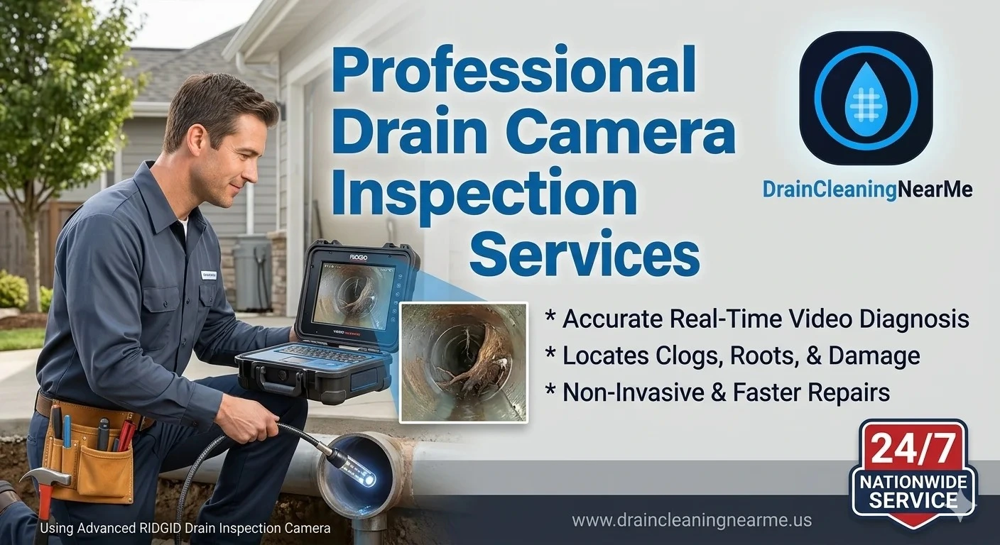

Professional Drain Camera Inspection Services
Stop guessing what is wrong with your plumbing. A professional drain camera inspection is the fastest, most accurate way to find the exact cause and location of your drainage issues. Whether you are dealing with recurring clogs, slow drains or are buying a new home; our video pipe inspection services give you the clear answers you need.
At DrainCleaningNearMe, we connect you with local licensed experts who specialize in sewer camera inspection and plumbing camera services. Our network provides 24/7 support across the USA, using advanced waterproof cameras to inspect your lines and identify roots, cracks or collapses without digging. Call now to schedule your drain line camera inspection and see exactly what is happening inside your pipes.

Why Drain Camera Inspection Matters
A sewer camera inspection gives technicians a live look inside your plumbing system. A waterproof camera is inserted into the pipe through an accessible entry point and the video is viewed in real time on a monitor. This makes it possible to identify problems exactly where they are, rather than guessing based on symptoms alone.
For customers searching for 'drain inspection services' or 'sewer inspection near me', this is one of the most effective ways to diagnose recurring plumbing issues quickly and accurately. It also helps avoid unnecessary repairs, wasted time and property damage.
What a Camera Inspection Can Detect
Hidden Pipe Damage
A professional drain and sewer camera inspection can reveal cracked, broken or collapsed pipes that are often invisible from the surface. These issues may be caused by age, soil movement, corrosion or external pressure.
Root Intrusion
Tree roots naturally seek moisture and sewer lines often provide exactly that. A sewer camera inspection can identify root intrusion before it turns into a complete blockage or pipe break.
Grease and Debris Buildup
Kitchen lines often suffer from grease and food buildup, while bathroom lines may collect soap scum, hair and sludge. A video drain inspection helps technicians see whether buildup is the main issue or if deeper damage is present.
Misalignment and Bellies
Pipes that sag or shift out of alignment can create low spots where waste collects. These “bellies” are a common cause of recurring backups and slow drainage.
Foreign Objects and Obstructions
Sometimes the problem is a misplaced object, heavy debris or construction material left in the line. A sewer line camera makes these blockages visible right away.
Benefits of Camera Inspection
Accurate Diagnosis
A major advantage of drain camera inspection services is precision. Instead of opening walls or digging without certainty, technicians can pinpoint the exact issue and location in real time.
Non-Invasive and Damage-Free
Because the camera travels through the pipe internally, there is no need for unnecessary demolition. That makes sewer and drain inspection a cleaner, safer and more efficient diagnostic option.
Saves Time and Money
When you know exactly what is wrong, repairs can be targeted and efficient. This reduces labor, avoids repeat service calls and lowers the risk of paying for the wrong fix.
Better Repair Planning
A camera inspection helps determine whether the best solution is snaking, hydro jetting, repair or replacement. This leads to smarter, more cost-effective recommendations.
When You Need a Drain Inspection
- Recurring Clogs: If the same drain keeps clogging again and again, there is likely a deeper issue in the line.
- Slow Drains Throughout the Home: When multiple fixtures drain slowly, the problem may be in the main line.
- Sewer Odors and Gurgling: Bad smells and gurgling sounds often mean trapped waste or a hidden blockage.
- Before Buying or Selling: Valuable during real estate transactions to avoid surprise repair costs.
- Before Major Repairs: Confirm whether the problem is repairable or whether replacement is better.
Our Inspection Services
Residential Systems
We inspect home plumbing systems including kitchen drains, bathroom drains, laundry lines and main sewer lines.
Commercial Sewer Camera
Ideal for restaurants, retail spaces, offices, and apartment buildings with high-use properties.
Emergency Drain Inspection
When a backup happens suddenly, diagnosing the issue fast helps the right repair begin immediately.
Storm Drain Inspection
Useful when drainage problems affect exterior systems or cause pooling around the property.
How the Process Works
1. Call Anytime
You can contact us 24/7 to request an inspection and describe the issue.
2. Instant Local Match
We connect you with a technician in your area who can perform the inspection quickly.
3. Live Camera Diagnosis
The technician performs a live video drain inspection and identifies the issue.
4. Problem Solved
We explain the best next step and provide clear, effective recommendations.
Practical Tips for Homeowners
- Schedule a camera inspection if clogs keep returning after cleaning.
- Get an inspection before buying a home with older plumbing.
- Use inspection results to plan repairs instead of guessing.
- Ask for camera documentation if you need proof for insurance.
- Consider periodic inspections for properties with large trees nearby.
Frequently Asked Questions
A drain camera inspection is a non-invasive diagnostic service that uses a waterproof camera to view the inside of your pipes in real time.
Yes, It gives a clear view of the exact problem, which saves time, money and unnecessary repairs.
Yes. We offer sewer and drain inspection for residential and commercial systems.
There is no single rule, but older homes, tree-heavy properties and homes with recurring backups benefit from periodic inspections.
Yes, Our emergency drain inspection service is available 24/7 nationwide.
Get Fast Drain Inspection Near You
If you want to stop guessing and start solving the real problem, a professional drain camera inspection is the smartest first step. DrainCleaningNearMe connects you with trusted experts for fast, accurate and non-invasive diagnostics anywhere in the USA.
24/7 Professional Inspection · Licensed Local Experts · Nationwide Coverage